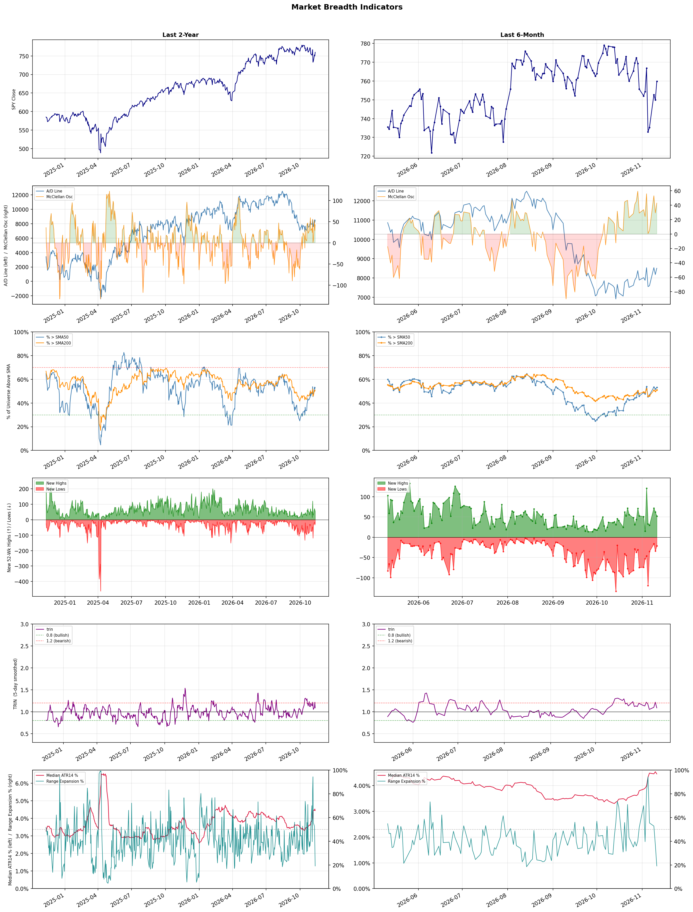

A daily market breadth and sector rotation report for active investors
| Item | Read |
|---|---|
| Regime | Selective Risk-On |
| Risk posture | Selective |
| Universe | 1,312 stocks tracked · 52 new 52-week highs · 30 active swing setups |
| Breadth | 53.2% of tracked stocks are above SMA50 — neutral range, new highs exceed new lows (52 vs 21) |
| Leadership | Advertising Agencies, Health Information Services, and Apparel Manufacturing |
| Weakest groups | Other Industrial Metals & Mining, Uranium, and Computer Hardware |
Use this report to prioritize research and chart review; validate entries, stops, liquidity, earnings, and risk before acting.
| Item | Read |
|---|---|
| Primary read | Selective Risk-On regime with Selective risk posture. |
| Research queue | APP, STGW, EVC, MGNI, TTD |
| Leadership focus | Advertising Agencies, Health Information Services, and Apparel Manufacturing |
| Caution list | Other Industrial Metals & Mining, Uranium, and Computer Hardware |
| Review prompt | Check extension risk, chart location, fundamentals, valuation, and earnings before using any research row. |
| Item | Read |
|---|---|
| Primary read | 1 active risk warnings; use screen output as watchlist input only. |
| Bullish screens | FIGS, KDP, CBOE, CME, ICE |
| Bearish screens | ALLO, GNL, LU, AGNT, ABR |
| Alerts / levels | Automated trigger, stop, ATR, liquidity, reward/risk, and event-risk levels are pending future enrichment. |
| Review prompt | Open the linked chart, define trigger and invalidation, then check liquidity and event risk independently. |
Risk Posture: Selective — screen backdrop supports selective research in leading industries
Metric context: McClellan below -50 = elevated selling pressure; below -100 = washout territory. Range Expansion = share of stocks with daily range above their 20-day average. Signal Density = share of tracked names appearing in signal screens.
| Breadth Date | % > SMA50 | % > SMA200 | New Highs | New Lows | McClellan | Median Range | Avg Range | Median ATR14 | Range Expansion | Signal Density |
|---|---|---|---|---|---|---|---|---|---|---|
| 2026-11-11 | 53.2% | 51.0% | 52 | 21 | 42.9 | 2.8% | 3.7% | 4.4% | 19.1% | 1.1% |

Prior comparison date: November 10, 2026
| Metric | Prior | Current | Change |
|---|---|---|---|
| Regime | Selective Risk-On | Selective Risk-On | unchanged |
| Risk Posture | Selective | Selective | unchanged |
| % > SMA50 | 51.8% | 53.2% | +1.4 pts |
| % > SMA200 | 49.8% | 51.0% | +1.2 pts |
| New Highs | 62 | 52 | -10 |
| New Lows | 34 | 21 | +13 |
Top-10 industries entering: Medical Instruments & Supplies and Restaurants. Top-10 industries leaving: Discount Stores and Drug Manufacturers - General. New multi-signal long setups: AMRX, CBOE, CDW, CME. New multi-signal short setups: ABR, AGNT, ALLO, GNL, LAC, LAR.
| Status | Tickers | Read |
|---|---|---|
| Added | ABR, AGNT, ALLO, AMRX, BLMN, BTSG, CBOE, CDW | New technical screen matches vs prior report. |
| Removed | AHR, APLE, BEN, CCEP, CNK, CNP, COTY, DD | No longer present in today's technical screen matches. |
| Still Active | DIS, FIGS, FWONK, ICE, KDP, LLY, PGNY, RPRX | Appeared in both current and prior reports. |
| Promoted | none | Model Screen Score improved by at least 15 points. |
| Downgraded | none | Model Screen Score declined by at least 15 points. |
| Direction | Industry | ETF | Prior Rank | Current Rank | Days | Rank Change |
|---|---|---|---|---|---|---|
| Rose | Airlines | N/A | 77 | 11 | 28 | +66 |
| Rose | Leisure | N/A | 79 | 15 | 42 | +64 |
| Rose | Restaurants | N/A | 66 | 10 | 42 | +56 |
| Rose | Advertising Agencies | N/A | 57 | 1 | 14 | +56 |
| Rose | REIT - Retail | N/A | 76 | 23 | 35 | +53 |
Bull: The airlines sector is experiencing a rising relative strength primarily due to a rebound in travel demand and strategic cost management, which is underscored by the recent headlines highlighting United Airlines' stock performance despite disappointing earnings. Additionally, the focus on long-term investment potential, as noted in articles discussing the best airline stocks to buy for 2026, suggests that investors are optimistic about the industry's recovery and profitability in the face of challenges like fuel volatility. This optimism is further reinforced by the overall positive sentiment towards airline stocks, indicating a robust outlook for the sector.
Bear: While the airlines sector may currently exhibit rising relative strength, this trend is primarily driven by short-term market sentiment rather than fundamental improvements. Disappointing earnings from United Airlines highlight persistent operational challenges, and the industry's vulnerability to fuel price volatility poses a significant threat to profitability. Moreover, the optimism surrounding long-term investments may overlook the potential for economic downturns or shifts in consumer behavior that could dampen travel demand, making the current rally more speculative than sustainable.
Verdict: The airlines sector's recent rise is fundamentally driven by a rebound in travel demand and effective cost management strategies, which have helped companies like United Airlines maintain investor interest despite short-term earnings disappointments. However, the key risk lies in the industry's ongoing vulnerability to fuel price volatility and potential economic downturns, which could significantly impact profitability and consumer travel behavior, suggesting that investors should remain cautious and consider these factors when evaluating long-term investments in airline stocks.
Sources: Google News
Bull: The leisure industry is experiencing a rising relative strength due to a resurgence in travel and tourism demand, as highlighted by multiple sources emphasizing growth opportunities despite industry pressures. Factors such as pent-up consumer demand post-pandemic, the increasing popularity of travel experiences, and a shift towards leisure spending are driving investor interest in stocks like Carnival and Travel + Leisure, even as some companies face challenges. Additionally, the potential for AI disruption in travel services may create new efficiencies and enhance customer experiences, further supporting the overall positive sentiment towards the sector.
Bear: While the leisure industry may show rising relative strength, this could be misleading as it fails to account for underlying economic pressures such as inflation and rising interest rates, which could dampen consumer spending on non-essential travel and leisure activities. Furthermore, the headlines suggest a divide in performance among travel and leisure stocks, indicating that not all companies are benefiting equally, and the potential for AI disruption may not translate into immediate financial gains, leaving many companies vulnerable to ongoing market volatility and shifting consumer preferences.
Verdict: The leisure industry's rising strength is primarily driven by a post-pandemic surge in travel demand, fueled by pent-up consumer desire for experiences and a shift towards leisure spending. However, the key risk lies in economic pressures such as inflation and rising interest rates, which could curtail discretionary spending and create disparities in performance among companies within the sector. Investors should remain cautious and monitor economic indicators closely while considering selective exposure to well-positioned companies that can leverage AI advancements for enhanced customer experiences.
Sources: Google News
Bull: The rising relative strength of the restaurant industry can be attributed to a combination of resilient consumer spending and strategic positioning of key players, as highlighted by the positive outlook in articles discussing the best restaurant ETFs for 2026 and the potential opportunities amidst recent sector-wide sell-offs. Additionally, companies like Darden Restaurants are showing signs of outperforming the broader consumer discretionary sector, indicating strong operational performance and consumer demand, which bodes well for the industry's overall growth trajectory.
Bear: While the rising relative strength of the restaurant industry may suggest resilience, it is crucial to consider the potential impact of macroeconomic headwinds, such as inflation and rising interest rates, which could dampen consumer spending in the discretionary sector. Additionally, the recent sector-wide sell-offs, including significant declines in stocks like Cheesecake Factory, indicate underlying vulnerabilities that may not be fully reflected in the optimistic outlook for key players like Darden. This suggests that the industry's growth trajectory may be more precarious than it appears, with the risk of a consumer pullback looming.
Verdict: The restaurant industry's rising strength is primarily driven by resilient consumer spending and strategic positioning by key players like Darden Restaurants, which are outperforming the broader discretionary sector. However, investors should remain cautious of macroeconomic headwinds, particularly inflation and rising interest rates, which pose a significant risk to consumer spending and could lead to a potential pullback in demand. It is advisable to monitor economic indicators closely and consider diversifying investments within the sector to mitigate these risks.
Sources: Google News
Bull: The Advertising Agencies sector is experiencing a rise in relative strength primarily due to its strategic adaptation to emerging technologies, particularly artificial intelligence, which is highlighted in the Bloomberg article discussing how ad agency stocks are poised to leverage AI disruption to their advantage. Additionally, the positive outlook from Yahoo Finance and The Motley Fool on top-performing stocks in the industry suggests a growing investor confidence in the sector's resilience and innovation, further driving interest and investment. This momentum is likely bolstered by the competitive positioning of major players like Publicis, as noted in the Investing.com article, which indicates a favorable landscape for growth amidst industry shifts.
Bear: While the bull thesis emphasizes the sector's adaptation to AI and positive sentiment, it overlooks significant headwinds such as the ongoing economic uncertainty and potential recessionary pressures that could lead to reduced advertising budgets across industries. Additionally, the competitive landscape is becoming increasingly crowded, with new entrants leveraging AI, which could dilute market share and profit margins for established players like Publicis and WPP. The recent selloff in related sectors, as highlighted by Reuters, raises concerns about the sustainability of the current momentum in advertising agencies, suggesting that investor confidence may be overly optimistic.
Verdict: The advertising agencies sector is likely experiencing a rise due to its strategic embrace of artificial intelligence, which enhances efficiency and effectiveness in ad campaigns, attracting investor confidence. However, a key risk lies in the potential for economic downturns to reduce advertising budgets, coupled with increasing competition from new entrants that could pressure profit margins for established firms. Investors should closely monitor economic indicators and competitive dynamics to gauge the sustainability of this growth trend.
Sources: Google News
Bull: The rising relative strength of the Retail REIT sector can be attributed to a combination of resilience in consumer spending and strategic positioning amidst higher interest rates, as highlighted by Yahoo Finance's mention of retail REITs that are still viable despite industry headwinds. Additionally, the positive outlook from Morningstar and U.S. News regarding the best REITs and ETFs for 2026 suggests that investors are increasingly recognizing the long-term growth potential of retail properties, particularly in light of expanding markets like India's REITs, which JLL notes could offer significant growth opportunities.
Bear: While the rising relative strength of Retail REITs may suggest resilience, it's crucial to consider the broader economic landscape, including persistent inflation and rising interest rates, which can dampen consumer spending and increase borrowing costs for these REITs. Additionally, the shift towards e-commerce and changing consumer preferences could undermine the long-term viability of traditional retail spaces, making the optimistic outlook from analysts like Morningstar and U.S. News potentially overly bullish in the face of these significant headwinds.
Verdict: The Retail REIT sector's rising strength is primarily driven by resilient consumer spending and strategic positioning that allows these entities to navigate higher interest rates effectively. However, the key risk lies in persistent inflation and the ongoing shift towards e-commerce, which could undermine traditional retail spaces and dampen future growth prospects. Investors should remain cautious and closely monitor these economic factors while evaluating their positions in Retail REITs.
Sources: Google News
| Direction | Industry | ETF | Prior Rank | Current Rank | Days | Rank Change |
|---|---|---|---|---|---|---|
| Fell | Computer Hardware | XLK | 3 | 85 | 42 | -82 |
| Fell | Semiconductor Equipment & Materials | SOXX | 5 | 78 | 42 | -73 |
| Fell | Copper | COPX | 7 | 80 | 42 | -73 |
| Fell | Electronic Components | XLK | 6 | 77 | 35 | -71 |
| Fell | Semiconductors | SOXX | 4 | 74 | 35 | -70 |
Bear: While the shift towards emerging technologies like quantum computing and AI may capture investor interest, it overlooks the fundamental challenges facing the Computer Hardware sector, particularly in the semiconductor space. The ongoing sell-off by hedge funds reflects a broader concern about oversupply, declining margins, and the cyclical nature of the chip market, which could lead to prolonged underperformance for traditional hardware companies, regardless of the hype surrounding new technologies. Furthermore, the transition to quantum computing is still in its infancy, and the timeline for commercial viability remains uncertain, suggesting that investors may be overly optimistic in reallocating capital away from established hardware sectors.
Bull: The relative weakness in the Computer Hardware sector can be attributed to a shift in investor sentiment towards emerging technologies, particularly quantum computing and AI, as highlighted in recent headlines. With articles emphasizing the potential of quantum computing stocks and advising against AI hardware investments, it suggests that investors are reallocating their capital to sectors perceived as having higher growth prospects. Additionally, the ongoing sell-off in chip stocks by hedge funds indicates a broader market skepticism about the near-term performance of traditional hardware companies amidst evolving tech trends.
Verdict: The Computer Hardware sector's decline is primarily driven by a shift in investor focus towards emerging technologies like quantum computing and AI, leading to capital reallocation away from traditional hardware companies. However, the bear case highlights a critical risk: the semiconductor market's oversupply and declining margins could result in prolonged underperformance for these established firms, suggesting that investors should exercise caution and consider the potential for continued volatility in the sector.
Sources: Google News
Bear: While the recent rally in semiconductor stocks may suggest a buying opportunity, it is crucial to recognize that the underlying issues of oversupply and declining demand for chips remain unresolved. The comparisons to the dot-com bubble are particularly concerning, as they highlight the potential for a significant market correction if investor enthusiasm wanes, especially given that many chip companies are still grappling with high valuations and a cyclical downturn in the industry. Furthermore, the notion of stocks being "oversold" does not guarantee a rebound; it may simply reflect a market that is adjusting to a new reality of slower growth and increased competition.
Bull: The Semiconductor Equipment & Materials sector is experiencing a decline in relative strength primarily due to market sentiments around oversupply and valuation concerns, as highlighted by Goldman Sachs labeling chip stocks as "oversold." This sentiment, coupled with comparisons to the dot-com bubble, suggests that investors have been cautious, leading to price corrections. However, the recent rally and identification of undervalued stocks indicate that the market may be adjusting, presenting a potential buying opportunity for long-term investors.
Verdict: The Semiconductor Equipment & Materials sector's decline is fundamentally driven by persistent oversupply and weakening demand, leading to heightened valuation concerns among investors. While the recent rally may indicate potential buying opportunities for long-term investors, the key risk remains the possibility of a significant market correction if demand does not recover, as many companies continue to face high valuations amid a cyclical downturn. Investors should approach with caution, closely monitoring demand indicators and competitive dynamics in the industry.
Sources: Google News
Bear: While the recent sell-off in copper stocks can be partially attributed to tariff uncertainties, the underlying fundamentals of the copper market present a more concerning picture. The global economic outlook is increasingly clouded by rising interest rates and potential recessions in key markets, which could dampen demand for copper in construction and manufacturing. Furthermore, the narrative of undervaluation may overlook the structural challenges facing the sector, including rising production costs and environmental regulations, which could further pressure profit margins and hinder recovery in copper prices.
Bull: The recent decline in the relative strength of copper stocks can be attributed to heightened uncertainty surrounding tariffs, which has led to a significant sell-off in major copper companies like Freeport-McMoRan and Teck Resources, as indicated by the sharp drops in their stock prices. Additionally, despite analysts like those from Scotiabank highlighting that copper mining stocks are undervalued after a sector rout, the overall market sentiment remains cautious, as evidenced by the headlines discussing the reversal of a record rally due to tariff doubts. This combination of macroeconomic concerns and market volatility is weighing on copper's performance relative to other industries.
Verdict: The recent decline in copper stocks is primarily driven by heightened macroeconomic uncertainty, particularly surrounding tariffs and rising interest rates, which threaten to dampen demand in key sectors like construction and manufacturing. Investors should be cautious, as the bear case highlights significant structural challenges, including increasing production costs and stringent environmental regulations, that could further pressure profit margins and hinder any potential recovery in copper prices. Therefore, while there may be opportunities for undervalued stocks, the overall market sentiment remains bearish, necessitating a careful assessment of risk before making investment decisions.
Sources: Google News
Bear: While the bull analyst attributes the relative weakness in the Electronic Components sector to broader market dynamics and isolated successes, a more critical view suggests that the sector is facing fundamental challenges that could hinder its recovery. The mixed performance highlighted in Q3 earnings, particularly from companies like Coherent and TTM Technologies, reflects deeper issues such as supply chain disruptions, rising raw material costs, and waning demand in key markets, which could undermine the sector's growth potential. Additionally, the recent rally in specific stocks like Vishay Intertechnology may be more of a short-term reaction rather than a sustainable trend, indicating that the overall sector remains vulnerable to further declines.
Bull: The relative weakness in the Electronic Components sector can be attributed to broader market dynamics, as evidenced by the recent headlines highlighting sector-wide rallies in specific companies like Vishay Intertechnology, which surged 10.4%. Additionally, the Q3 earnings reports from companies such as Coherent and TTM Technologies suggest mixed performance, indicating that while some companies are thriving, others may be struggling, leading to a lack of overall momentum in the sector. This divergence in performance could be contributing to the sector's falling relative strength against other industries.
Verdict: The Electronic Components sector's decline is primarily driven by fundamental challenges such as supply chain disruptions, rising raw material costs, and decreasing demand in key markets, which are reflected in mixed Q3 earnings reports. While certain companies like Vishay Intertechnology may experience short-term rallies, the overall sector remains vulnerable to further declines if these underlying issues persist. Investors should closely monitor these fundamental risks and consider a cautious approach to exposure in this sector.
Sources: Google News
Bear: While the bull thesis highlights potential long-term growth in the semiconductor sector, the current decline in relative strength and the looming $57 billion storm suggest that significant headwinds are at play, including persistent macroeconomic pressures and geopolitical tensions that could further disrupt supply chains and dampen demand. Moreover, the recent sell-off indicates that investor sentiment is shifting towards caution, raising concerns about overvaluation and the sustainability of earnings growth in a potentially slowing economy, which may negate any perceived buying opportunities in the near term.
Bull: The semiconductor sector is experiencing a decline in relative strength primarily due to macroeconomic pressures, as indicated by headlines discussing a potential $57 billion storm impacting chip stocks, which suggests concerns over demand fluctuations and supply chain disruptions. Additionally, the recent sell-off highlighted in multiple articles points to investor caution amidst broader market volatility, prompting a flight to safety and leading to a temporary dip in semiconductor stock valuations despite their long-term growth potential. However, the emphasis on buying opportunities and the identification of top stocks for future growth signals that savvy investors recognize the sector's resilience and future upside, making it an attractive entry point.
Verdict: The semiconductor industry's current decline is fundamentally driven by macroeconomic pressures, including demand fluctuations and supply chain disruptions exacerbated by geopolitical tensions, which have led to a sell-off and heightened investor caution. Key risks from the bear case include the potential for sustained economic slowdown that could undermine earnings growth and further depress stock valuations, suggesting that investors should approach new positions with caution and consider waiting for clearer signs of stabilization before committing capital.
Sources: Google News
| Industry | Rank | ETF | 7d | 14d | 28d | 42d | Chg 42d | Size | 20D | 60D | Composite | Active Setups |
|---|---|---|---|---|---|---|---|---|---|---|---|---|
| Advertising Agencies | 1 | N/A | 38 | 57 | 38 | 41 | +40 | 7 | 29.7% | 17.7% | 0.976 | 0 |
| Health Information Services | 2 | N/A | 2 | 2 | 4 | 4 | +2 | 12 | 15.4% | 33.6% | 0.949 | 0 |
| Apparel Manufacturing | 3 | N/A | 1 | 7 | 16 | 43 | +40 | 6 | 16.9% | 23.3% | 0.943 | 0 |
| Specialty Retail | 4 | XRT | 4 | 18 | 19 | 18 | +14 | 13 | 20.6% | 16.0% | 0.926 | 0 |
| REIT - Hotel & Motel | 5 | XLRE | 6 | 3 | 14 | 11 | +6 | 9 | 12.1% | 12.5% | 0.889 | 0 |
| Household & Personal Products | 6 | XLP | 9 | 6 | 5 | 28 | +22 | 11 | 11.0% | 20.1% | 0.883 | 0 |
| Beverages - Non-Alcoholic | 7 | XLP | 13 | 21 | 27 | 59 | +52 | 7 | 13.6% | 8.3% | 0.876 | 0 |
| Medical Care Facilities | 8 | IHF | 10 | 5 | 10 | 20 | +12 | 9 | 12.7% | 17.5% | 0.870 | 0 |
| Medical Instruments & Supplies | 9 | N/A | 16 | 26 | 15 | 19 | +10 | 13 | 11.9% | 8.8% | 0.858 | 0 |
| Restaurants | 10 | N/A | 7 | 16 | 20 | 66 | +56 | 16 | 12.9% | 11.3% | 0.857 | 2 |
Rank columns (7d–42d) show the industry's rank that many trading days ago — lower is stronger. Chg 42d = rank change vs 42 trading days ago — positive means the industry moved up. 20D and 60D are the mean stock return within the industry over that period. Active Setups: count of today's swing-trade candidates from this industry appearing across all signal screens.
| Industry | Rank | ETF | 7d | 14d | 28d | 42d | Chg 42d | Size | 20D | 60D | Composite | Active Setups |
|---|---|---|---|---|---|---|---|---|---|---|---|---|
| Other Industrial Metals & Mining | 87 | N/A | 86 | 86 | 81 | 70 | -17 | 21 | -11.3% | -33.1% | 0.059 | 0 |
| Uranium | 86 | URA | 87 | 87 | 87 | 78 | -8 | 6 | -8.1% | -34.7% | 0.097 | 0 |
| Computer Hardware | 85 | XLK | 83 | 65 | 51 | 3 | -82 | 15 | -14.0% | -27.7% | 0.116 | 0 |
| Auto Parts | 84 | N/A | 76 | 79 | 75 | 47 | -37 | 19 | -7.9% | -21.6% | 0.127 | 0 |
| REIT - Mortgage | 83 | N/A | 70 | 82 | 85 | 85 | +2 | 11 | -6.1% | -25.9% | 0.130 | 0 |
| Electrical Equipment & Parts | 82 | XLI | 84 | 85 | 84 | 46 | -36 | 12 | -6.4% | -27.9% | 0.139 | 0 |
| Oil & Gas Equipment & Services | 81 | XES | 77 | 42 | 70 | 50 | -31 | 17 | -8.7% | -20.0% | 0.149 | 0 |
| Copper | 80 | COPX | 79 | 62 | 13 | 7 | -73 | 6 | -10.7% | -12.7% | 0.150 | 0 |
| Communication Equipment | 79 | IYZ | 82 | 48 | 54 | 23 | -56 | 15 | -9.1% | -20.5% | 0.162 | 0 |
| Semiconductor Equipment & Materials | 78 | SOXX | 85 | 72 | 35 | 5 | -73 | 17 | -11.0% | -23.5% | 0.170 | 0 |
Rank columns (7d–42d) show the industry's rank that many trading days ago — lower is stronger. Chg 42d = rank change vs 42 trading days ago — positive means the industry moved up. 20D and 60D are the mean stock return within the industry over that period. Active Setups: count of today's swing-trade candidates from this industry appearing across all signal screens.
These are research candidates from top-ranked stocks, capped at five names per industry to avoid over-concentration. Returns shown (60D, 120D, 250D) are historical — they reflect where prices have already moved, not forward expectations. Extension Risk flags names that may require extra patience or a better entry point. They are not buy signals.
Chart: TV = TradingView chart (opens in browser); PDF = local chart file (if downloaded).
| Ticker | Name | Industry | Industry Rank | Market Cap | 60D Hist | 120D Hist | 250D Hist | Extension Risk | Research Reason | Chart |
|---|---|---|---|---|---|---|---|---|---|---|
| APP | Applovin | Advertising Agencies | 1 | N/A | 31.7% | -16.7% | -30.8% | Constructive | Top-ranked in industry | TV |
| STGW | Stagwell | Advertising Agencies | 1 | N/A | 28.5% | 80.8% | 120.3% | Constructive | Top-ranked in industry | TV |
| EVC | Entravision Communications | Advertising Agencies | 1 | N/A | 19.1% | 6.2% | 256.9% | Constructive | Top-ranked in industry | TV |
| MGNI | Magnite | Advertising Agencies | 1 | N/A | 19.1% | 121.5% | 105.6% | Extended | Top-ranked in industry; extended | TV |
| TTD | The Trade Desk | Advertising Agencies | 1 | N/A | 19.1% | -24.9% | -63.5% | Constructive | Top-ranked in industry | TV |
| SDGR | Schrodinger | Health Information Services | 2 | N/A | 78.4% | 138.2% | 75.3% | Extended | Top-ranked in industry; extended | TV |
| TEM | Tempus AI | Health Information Services | 2 | N/A | 60.9% | 70.9% | 11.7% | Extended | Top-ranked in industry; extended | TV |
| CERT | Certara | Health Information Services | 2 | N/A | 46.4% | 126.9% | 41.7% | Extended | Top-ranked in industry; extended | TV |
| TDOC | Teladoc Health | Health Information Services | 2 | N/A | 38.2% | 36.1% | 19.7% | Constructive | Top-ranked in industry | TV |
| HTFL | Heartflow | Health Information Services | 2 | N/A | 30.7% | 102.4% | 65.4% | Extended | Top-ranked in industry; extended | TV |
| FIGS | FIGS Inc | Apparel Manufacturing | 3 | N/A | 65.3% | 88.1% | 133.5% | Extended | Top-ranked in industry; extended | TV |
| VFC | VF Corp | Apparel Manufacturing | 3 | N/A | 45.2% | 29.1% | 36.7% | Constructive | Top-ranked in industry | TV |
| PVH | PVH Corp | Apparel Manufacturing | 3 | N/A | 16.9% | 6.2% | 15.2% | Constructive | Top-ranked in industry | TV |
| LEVI | Levi Strauss & Co. | Apparel Manufacturing | 3 | N/A | 10.3% | 12.3% | 13.7% | Constructive | Top-ranked in industry | TV |
| ZGN | Ermenegildo Zegna NV | Apparel Manufacturing | 3 | N/A | 4.2% | 6.2% | 36.3% | Constructive | Top-ranked in industry | TV |
| ASO | Academy | Specialty Retail | 4 | N/A | 48.3% | 36.7% | 56.1% | Constructive | Top-ranked in industry | TV |
| ARHS | Arhaus | Specialty Retail | 4 | N/A | 45.2% | 127.9% | 64.5% | Extended | Top-ranked in industry; extended | TV |
| EVGO | EVgo Inc | Specialty Retail | 4 | N/A | 22.7% | -2.1% | -40.3% | Constructive | Top-ranked in industry | TV |
| SBH | Sally Beauty Holdings | Specialty Retail | 4 | N/A | 17.8% | 53.8% | 30.9% | Constructive | Top-ranked in industry | TV |
| WOOF | Petco Health and Wellness | Specialty Retail | 4 | N/A | 4.3% | 8.7% | -5.3% | Constructive | Top-ranked in industry | TV |
These are technical screen matches from existing signal files. They are not trade recommendations. Trigger, stop, ATR, liquidity, reward/risk, and event risk still require separate validation until those inputs are available.
Model Screen Score is weighted by signal count, industry rank, freshness, and setup type. It is not a probability of profit, expected return, or suitability rating. Industry cap: max 3 candidates per industry.
Signal glossary: Momentum Pullback = stock in an uptrend that has pulled back 10–30% and shows re-entry conditions. MA Compression = short- and long-term moving averages converging, often preceding a directional move. Three-Day Up/Down = three consecutive closes in the same direction. New 52Wk High/Low = price reached a new annual extreme.
Chart: TV = TradingView chart (opens in browser); PDF = local chart file (if downloaded).
| Ticker | Industry | Setups | Close | Industry Rank | Signal Count | Model Screen Score | Reason | Chart |
|---|---|---|---|---|---|---|---|---|
| FIGS | Apparel Manufacturing | New 52Wk High; Three-Day Up | 23.40 | 3 | 2 | 100 | Multi-signal; top industry breakout | TV |
| KDP | Beverages - Non-Alcoholic | New 52Wk High; Three-Day Up | 38.25 | 7 | 2 | 93 | Multi-signal; top industry breakout | TV |
| CBOE | Financial Data & Stock Exchanges | New 52Wk High; Three-Day Up | 369.19 | 14 | 2 | 85 | Multi-signal; new-high strength | TV |
| CME | Financial Data & Stock Exchanges | New 52Wk High; Three-Day Up | 315.86 | 14 | 2 | 85 | Multi-signal; new-high strength | TV |
| ICE | Financial Data & Stock Exchanges | New 52Wk High; Three-Day Up | 180.59 | 14 | 2 | 85 | Multi-signal; new-high strength | TV |
| LLY | Drug Manufacturers - General | New 52Wk High; Three-Day Up | 1437.29 | 17 | 2 | 77 | Multi-signal; new-high strength | TV |
| AMRX | Drug Manufacturers - Specialty & Generic | New 52Wk High; Three-Day Up | 21.71 | 18 | 2 | 77 | Multi-signal; new-high strength | TV |
| VTRS | Drug Manufacturers - Specialty & Generic | New 52Wk High; Three-Day Up | 21.06 | 18 | 2 | 77 | Multi-signal; new-high strength | TV |
| SPG | REIT - Retail | New 52Wk High; Three-Day Up | 234.75 | 23 | 2 | 77 | Multi-signal; new-high strength | TV |
| PGNY | Healthcare Plans | New 52Wk High; Three-Day Up | 36.50 | 24 | 2 | 77 | Multi-signal; new-high strength | TV |
| DIS | Entertainment | New 52Wk High; Three-Day Up | 119.65 | 27 | 2 | 70 | Multi-signal; new-high strength | TV |
| FWONK | Entertainment | New 52Wk High; Three-Day Up | 111.17 | 27 | 2 | 70 | Multi-signal; new-high strength | TV |
| CDW | Information Technology Services | New 52Wk High; Three-Day Up | 173.08 | 41 | 2 | 65 | Multi-signal; new-high strength | TV |
| RPRX | Biotechnology | New 52Wk High; Three-Day Up | 70.01 | 47 | 2 | 65 | Multi-signal; new-high strength | TV |
| VZ | Telecom Services | MA Compression; Three-Day Up | 46.60 | 42 | 2 | 60 | Multi-signal; compression setup | TV |
| TW | Capital Markets | New 52Wk High; Three-Day Up | 130.60 | 75 | 2 | 55 | Multi-signal; new-high strength | TV |
| TRP | Oil & Gas Midstream | MA Compression; Three-Day Up | 64.30 | 62 | 2 | 50 | Multi-signal; compression setup | TV |
| TTD | Advertising Agencies | Three-Day Up | 15.98 | 1 | 1 | 55 | Single-signal; top industry setup | TV |
| BTSG | Health Information Services | Three-Day Up | 72.62 | 2 | 1 | 55 | Single-signal; top industry setup | TV |
| BLMN | Restaurants | Momentum Pullback | 10.23 | 10 | 1 | 50 | Single-signal; top industry pullback | TV |
| QSR | Restaurants | MA Compression | 76.66 | 10 | 1 | 45 | Single-signal; top industry setup | TV |
Bearish setups — stocks making new lows or showing persistent downside patterns. Validate carefully before acting.
| Ticker | Industry | Setups | Close | Industry Rank | Signal Count | Model Screen Score | Reason | Chart |
|---|---|---|---|---|---|---|---|---|
| ALLO | Biotechnology | New 52Wk Low; Three-Day Down | 0.90 | 47 | 2 | 35 | Multi-signal; new-low weakness | TV |
| GNL | REIT - Diversified | New 52Wk Low; Three-Day Down | 6.75 | 58 | 2 | 35 | Multi-signal; new-low weakness | TV |
| LU | Credit Services | New 52Wk Low; Three-Day Down | 7.06 | 66 | 2 | 25 | Multi-signal; new-low weakness | TV |
| AGNT | Real Estate Services | New 52Wk Low; Three-Day Down | 2.85 | 68 | 2 | 25 | Multi-signal; new-low weakness | TV |
| ABR | REIT - Mortgage | New 52Wk Low; Three-Day Down | 1.39 | 83 | 2 | 15 | Multi-signal; new-low weakness | TV |
| MFA | REIT - Mortgage | New 52Wk Low; Three-Day Down | 5.84 | 83 | 2 | 15 | Multi-signal; new-low weakness | TV |
| LAC | Other Industrial Metals & Mining | New 52Wk Low; Three-Day Down | 1.65 | 87 | 2 | 15 | Multi-signal; new-low weakness | TV |
| LAR | Other Industrial Metals & Mining | New 52Wk Low; Three-Day Down | 3.94 | 87 | 2 | 15 | Multi-signal; new-low weakness | TV |
| SGML | Other Industrial Metals & Mining | New 52Wk Low; Three-Day Down | 5.16 | 87 | 2 | 15 | Multi-signal; new-low weakness | TV |
How To Use This Report
| Use | Purpose |
|---|---|
| Market map | Start with breadth, regime, risk warnings, and what changed since the prior report. |
| Industry scan | Use leading, deteriorating, rising, and declining industries to focus research. |
| Research queue | Treat long-term candidates as names for deeper fundamental, valuation, and chart review. |
| Technical review | Treat bullish and bearish screen matches as watchlist inputs that require independent trigger, stop, liquidity, and event-risk checks. |
| Source follow-up | Use chart links and source files to verify raw inputs before relying on any row. |
What This Report Is Not
| Not | Meaning |
|---|---|
| Investment advice | The report does not evaluate personal objectives, risk tolerance, tax situation, account type, or suitability. |
| Buy/sell recommendation | Named tickers are research candidates or screen matches, not recommendations to transact. |
| Price target | The report does not provide fair value estimates, targets, or expected returns. |
| Trade plan | Trigger, stop, sizing, reward/risk, liquidity, and event-risk review remain separate user work. |
| Performance claim | Model Screen Score is not validated historical performance or a forecast of future results. |
| Item | Note |
|---|---|
| Version | Daily Report Methodology v1 |
| Model Screen Score | Screen-fit rank based on signal count, industry rank, freshness, and setup type. |
| Not predictive proof | The score is not expected return, probability of profit, historical validation, or suitability analysis. |
| Industry ranks | Composite industry ranks use existing daily ranking outputs and historical rank columns when available. |
| Research candidates | Long-term rows are research candidates from ranked stocks and leading industries, with historical returns labeled as historical only. |
| Technical matches | Bullish and bearish rows are screen matches requiring independent chart, trigger, stop, liquidity, and event-risk review. |
| Source | Status | Rows | Path |
|---|---|---|---|
| Market breadth | present | 1253 | breadth_20261111.csv |
| Industry composite rankings | present | 87 | all_industry_composite_20261111.csv |
| Top ranked stocks | present | 103 | top_ranked_composite_20261111.csv |
| All ranked stocks | present | 1312 | all_stocks_composite_sorted_20261111.csv |
| Top momentum pullbacks | present | 1465 | top_momentum_pullbacks_20261111.csv |
| MA compression | present | 1465 | ma_compression_stocks_20261111.csv |
| Three-day up/down | present | 141 | three_day_up_down_stocks_20261111.csv |
| New 52-week members | present | 73 | breadth_new_52wk_members_20261111.csv |
This report is generated from automated technical screens and is for informational and research purposes only. It is not investment advice, a solicitation, or a recommendation to buy or sell any security. Past performance is not indicative of future results. You are solely responsible for your own investment decisions. Consult a licensed financial advisor before acting on any information herein.